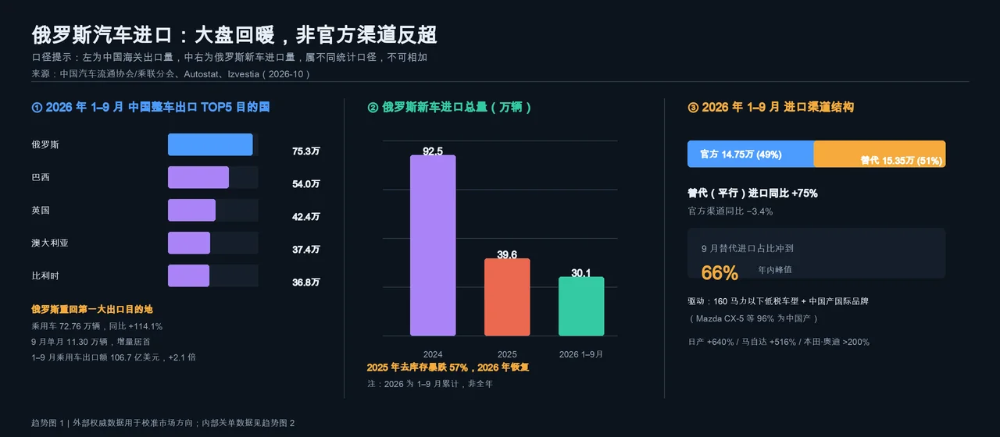
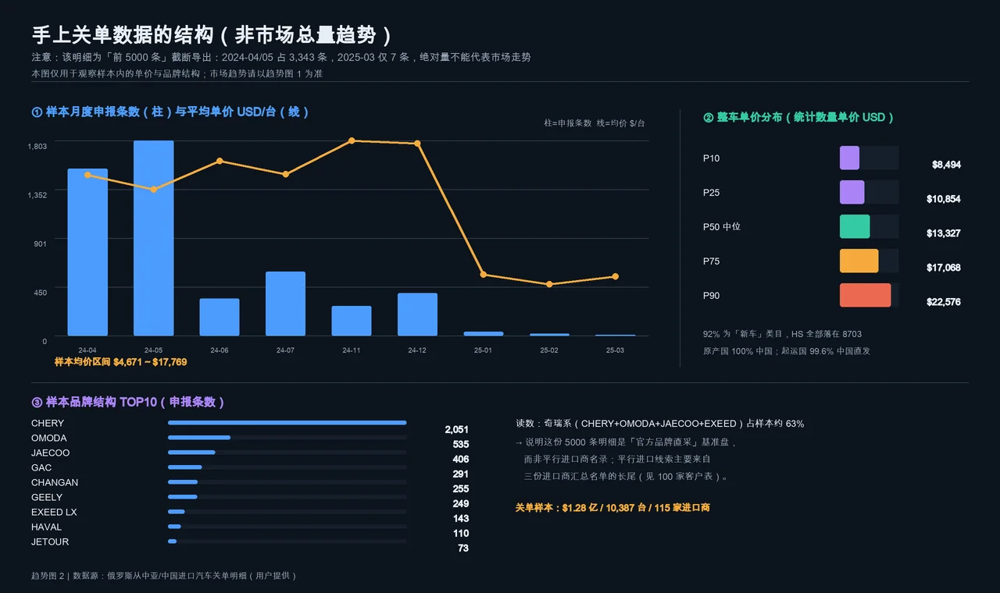
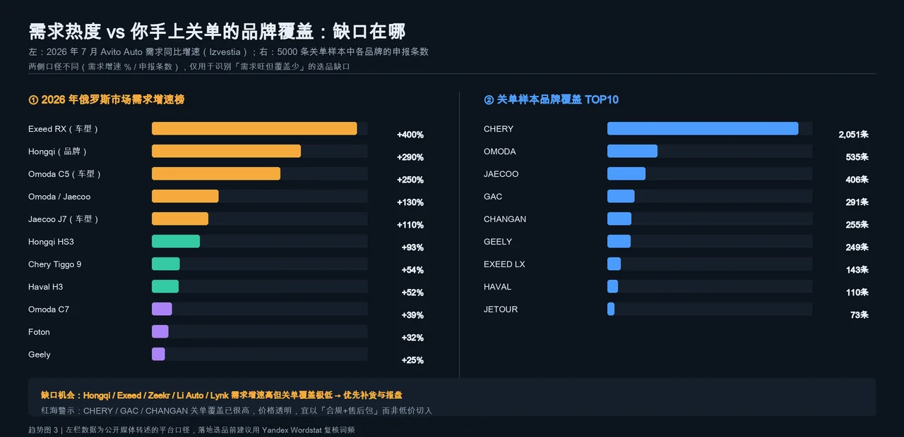
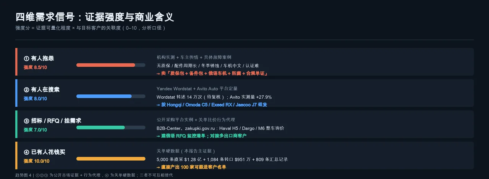
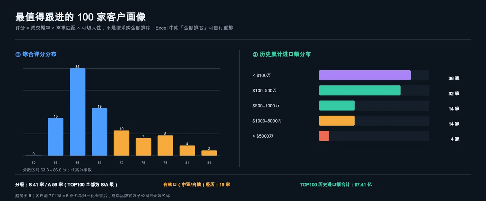

四维需求信号 × 100 家可跟进客户
数据：用户提供的 6 份关单/进口商名单（2022-08 ~ 2025-03）＋ 2026 年公开市场数据
六句话看完这份报告
2026 年 1–9 月俄罗斯新车进口 30.1 万辆，其中「替代（平行）进口」15.35 万辆、占 51%，同比 +75%；官方渠道 14.75 万辆、同比 −3.4%；9 月替代进口占比冲到 66%。同期中国整车出口俄罗斯 75.26 万辆，重回第一大目的地，乘用车同比 +114.1%。
2025-01 关税 20–38%、2025-07 OTTC 强制俄境内实验室认证、2025-12-01 起取消 >160 马力个人进口优惠、2026 年 СРОТ/СПОТ 预申报；报废税上调 70–85% 的年份在公开来源中有 2024-10 与 2025-10 两种记载，已列为存疑、不作确定性结论。高功率车型商业报废税约 80–90 万卢布，需求向 150 马力左右集中。另需注意 2026-04-01 起个人经 EAEU 进口车辆视同商业进口、按工贸部均价库比对补差，低价转口清关路径基本被堵死。
其中奇瑞俄罗斯子公司一家就 3,043 单 / $4,046 万，出口商多为主机厂，起运国 99.6% 中国直发；TOP7 官方子公司占 2024 年 $81.16 亿的约 90%。可跟进长尾主要在 424 家对华直采名单的 417 家非官方主体；385 家经中亚名单不含原产国字段，明确原产中国的仅 22 家 / $951 万（占 0.85%），只能作为「第三国转口渠道能力」线索，不能当作「已买中国车」的证据。
原产国全部中国，96.8% 经白俄罗斯、91.4% 走铁路（8.7% 公路），但品类是 ATV / 雪地车 / 迷你摩托，单价中位数仅 $478/台。这条链路证明了「第三国转口 + 中国原产」的操作可行性，但货值结构与整车出口不同。
① 抱怨、② 搜索、③ RFQ 来自公开市场证据与关单行为代理，用于判断「卖什么、怎么卖」；④ 已花钱买来自关单，用于判断「找谁」。三者证据等级不同，不能互相替代，也不能把代理指标当成已成交需求。
v1 综合分 = 采购实力 28 + 频次 14 + 新鲜度 14 + 平行属性 22 + 需求匹配 10 + 可切入性 12。核验后「频次」源数据不可信，v2 已剔除该维度，但按 86 分制使金额与平行属性权重被动升至 32.6% / 25.6%；v2 分是分位映射值（50–90），与 v1 加总分不同量纲，仅供位次对照。因此 $942 万的 АВТОТРЕЙД КРАСНОДАР 排在 $8,906 万的 ЖЕФКО 之前——前者有转口经验、高单价豪车、体量适中更易切入。Excel 已附「金额排名」「v2 分位次」及「v3 维度优化示范」表，可随时重排。
交叉验证：22 家「原产地中国」汇总表合计 $9,510,727，与 1084 条转口明细合计完全一致 —— 两份数据同源、口径自洽。
| 文件 | 规模 | 时间范围 | 总额 | 实际内容 | 问题 / 处理 |
|---|---|---|---|---|---|
| 俄罗斯从中国进口的汽车明细关单前5000个数据.xlsx | 5,000 行 | 2024-04 ~ 2025-03 | $1.279 亿 | 官方品牌子公司直采整车；92% 新车，HS 全为 8703 | 「前 5000 条」截断：2024-04/05 占 3,343 条、2025-03 仅 7 条，绝对量不能当趋势 |
| 俄罗斯从中亚进口中国进口的汽车明细.xlsx | 5,000 行 | 同上 | $1.279 亿 | 与上一文件 MD5 完全一致 | 重复文件，已去重 |
| 俄罗斯从中亚进口的汽车的关单明细.xlsx | 1,084 行 | 2022-08 ~ 2023-07 | $951 万 | 白俄 1,049 / 吉尔吉斯 31 / 哈萨克 4；铁路 91.4%、公路 8.7% | ATV、雪地车、迷你摩托为主，单价中位 $478 |
| 俄罗斯进口中国的汽车经销商名单.xlsx | 424 家 | 2024-01 ~ 2025-01 | $81.16 亿 | 全部对华进口主体汇总 | TOP7 官方子公司占约 90%，长尾 417 家才是目标池 |
| 俄罗斯从中亚进口汽车的关单.xlsx | 385 家 | 2022-08 ~ 2023-07 | $11.16 亿 | 经中亚/EAEU 进口整车汇总，均价 $16,023/台；表内无原产国字段 | 明确原产中国仅 22 家 / $951 万（占 0.85%，均价 $441/台）；同名多行 14 组；含 GERMANY / KAZAKHSTAN 等非公司名 |
| 俄罗斯从中亚进口关单_原产地是中国的俄罗斯进口商名单.xlsx | 22 家 | 2022-08 ~ 2023-07 | $951 万 | 上表中申报原产地为中国的子集 | 与 1084 条转口明细总额完全吻合，交叉验证通过 |
① 抱怨 / ② 搜索 / ③ RFQ / ④ 已购 —— 前三维决定「卖什么、怎么说」，第四维决定「找谁」。
抱怨不是坏消息，是「可定价的服务缺口」。车源同质化后，谁能把质保、备件、俄语化、防腐、认证单证打包，谁就能摆脱纯比价。
报价单增加 4 个可选包：延保 / 常用易损件 / 俄语车机与本地地图 / 底盘防腐 + OTTC 与 СРОТ 单证代办。
把「需求增速榜」和「你关单里的品牌覆盖」叠起来看，缺口很清楚：Hongqi / Exeed / Zeekr / Li Auto / Lynk 需求旺但关单覆盖极低；CHERY / GAC / CHANGAN 覆盖已高，是红海。
优先组货 Hongqi HS3、Omoda C5、Exeed RX、Jaecoo J7，以及中国产 Mazda CX-5 等 160 马力以下版本；配件按 3 月/10 月换胎季提前备货。
公开 RFQ 多为俄本土法人采购，中国供应商直接投标门槛高，但它验证了「中国品牌整车」已进入俄企业采购清单。更可操作的是关单里的比价行为：多供应商客户 = 明确的可替换窗口。
建俄语 RFQ 周监控（Поставка автомобиля / Запрос цен / Haval / Chery / Geely），优先跟「对接≥3 家出口商」和「报关代理需穿透」的客户。
这是唯一可直接转成销售动作的硬证据：客户是谁、买了多少、多久买一次、什么价位、走哪条渠道。①②③ 决定话术，④ 决定名单。
按 100 家名单做存续与联系方式核验 → 分层触达 → 小批量试单验证清关路径，再放量。
5 张图：市场大盘 → 内部结构 → 需求缺口 → 信号强度 → 客户画像





从中国货源到俄罗斯终端：直采与第三国转口两条路径
按成交概率排序（不是按金额）。点击任意一行展开「跟进原因 / 建议切入点 / 四维信号 / 风险」；表头可排序，支持搜索与分级筛选。完整字段见配套 Excel。
| # | 进口商名称 | 综合分 | 分级 | 累计进口额 | 样本记录 | 最近活跃 | 地区 | 转口 |
|---|
从名单到订单的四步闭环
100 家客户做一轮存续核验：查 INN、官网、РБК/Контур.Фокус 工商信息，确认仍在进口；对「ЦТ/ОТТ ПО ПОРУЧЕНИЮ」类记录先穿透找实际货主。数据最新只到 2025-03，这一步不能省。
主力组货压在 150 马力左右、160 马力以下：Hongqi HS3 / Omoda C5 / Exeed RX / Jaecoo J7 / Haval H3，以及中国产 Mazda CX-5。高功率车型单独做报废税测算，不进常规报价。
把延保、易损件包、俄语车机与地图、底盘防腐、OTTC/СРОТ 单证代办做成 4 个可选包，直接对应 ① 的四类抱怨。这样报价不是比谁低，而是比谁让客户少踩坑。
俄语关键词清单每周扫 B2B-Center / zakupki.gov.ru / Tektorg；同时对 S 级客户先走 1–2 台试单，把清关、认证、时效跑通，再谈年度框架。
| 来源 | 引用的数据 | 出处 |
|---|---|---|
| Autostat / Izvestia | 2026 前 9 月替代进口 15.35 万辆占 51%、9 月 66%；2025 年 39.6 万辆 −57%；中国直发 6.75 万 +83%、吉尔吉斯 5.4 万 +124% | iz.ru/en/node/2185189 · en.iz.ru/en/node/2180879 |
| 中国汽车流通协会 / 乘联分会 | 2026 1–9 月中国整车出口俄 75.26 万辆；乘用车 72.76 万辆 +114.1% | cada.cn/Trends/info_91_10590.html |
| Izvestia / Avito Auto | 2026-07 中国新车需求 +27.9%；Hongqi、Omoda C5、Exeed RX 增速 | en.iz.ru/en/node/2147390 |
| Yandex Wordstat 转述（二手，未验证） | 2026-07 中国整车约 14 万次、汽配 4.5 万次；口径不明 | glosellers.com / 亿恩网 / 搜狐（同源转载） |
| FreeTender / B2B-Center / zakupki.gov.ru | Haval H5 / Dargo / M6 整车 RFQ 实例与开放标的数 | freetender.net / zakupki.gov.ru |
| Motoram.ru / AUTONEWS / Lamark / Sidorin Lab | 平行进口无质保、Zeekr 9X 故障、17 品牌防腐测试、200 万条舆情 | motoram.ru（2026-01）等 |
| German-Russian Chamber of Foreign Trade / Eastern Economy | 2026 上半年俄车市 +14.8%；日系经平行渠道回流；160 马力门槛 | eastern-economy.com |
| 用户提供 6 份 Excel | 全部关单硬数据与客户名单 | /Users/zhaoguoxing/Desktop/俄罗斯/ |
对 6 份源表、报告全文、100 家客户表、5 张趋势图及全部外部引用做了独立重算与一手来源复核。原 100 家名单与排序保留，数值口径与错误表述已修正。
$127,921,894 / 10,387 台 / 115 家进口商 / 2024-04-02~2025-03-27；单价中位 $13,326.7；HS 全为 8703；新车 4,626 条占 92.5%；原产国 100% 中国；起运国中国 4,979 条占 99.6%。
2024-04 1,540 条 + 2024-05 1,803 条 = 3,343 条；2025-03 仅 7 条 —— 「前 5000 条」截断判断成立，月度绝对量不可作趋势。
奇瑞俄罗斯子公司 3,043 单 / $40,461,997；CHERY+OMODA+JAECOO+EXEED 共 3,135 条占 62.7%；L_direct 的 TOP7 官方子公司合计占 89.97%（「约 90%」准确）。
$9,510,727 / 21,548 台 / 22 家；单价中位 $478.26；白俄 1,049 占 96.8%、吉尔吉斯 31、哈萨克 4。
22 家「原产地中国」汇总表合计 $9,510,727 与 1,084 条转口明细完全吻合；5,000+1,084 行全部满足「单价 = 总价 ÷ 数量」，0 行不符。
424 家 $8,115,941,218、385 家 $1,116,192,381、22 家 $9,510,727，金额与行数均与源表一致。
Autostat：30.1 万辆 / 替代 15.35 万占 51% / +75% / 9 月 66% / 官方 −3.4% / 2025 年 92.5 万→39.6 万 −57%；乘联分会：整车 752,602 辆、乘用车 727,579 辆 +114.1%、9 月 112,962 辆；1–9 月乘用车出口额 106.7 亿美元 +2.1 倍；Avito：+27.9% 对大盘 +9.4%、均价 380 万卢布及全部车型增速榜；motoram.ru：Zeekr 9X 后减速器壳体开裂、更换约 75 万卢布且平行进口无质保。
1,084 行中转口运输方式实为 RAIL 990 条（91.4%）、ROAD 94 条（8.7%）。原报告 4 处已改。
21 是按 INN 去重的结果，按名称与 22 家汇总名单一致，改用 22 家口径。
809 = 424 + 385，是两份主名单记录数；22 家子集与 385 家重叠，不能当第三份相加。已改为明确表述。
统一口径重算后的结果。
6 家「累计额 ≠ 直采+转口」、3 家直采均价不符、3 家转口均价不符、44 家「申报次数 = 台数」，全部消除；原因是 v1 把金额、台数、均价、次数分别从 5 份名单取数，未做同源配对。
如「申报 5,412 次」「申报 3,557 次」实为台数。原因文本与 ④ 信号已重写；该列改名为「关单样本记录数」，且只对有关单明细的客户填值。
106.7 亿美元为「乘用车」出口额，非全部汽车，已标注。
仅见 glosellers、亿恩网、搜狐等多家出海媒体同源转载，未找到 Yandex 官方原始数据；且「月搜 vs 累计」「单词 vs 品类汇总」口径不明。已降为方向性参考，不再作为核心定量证据；客户话术改以 Avito 实测增速为主。
不同媒体口径从「半个月」到「45 天+」不等，缺一手统计，改为定性描述。
另有来源记为 2025-10，需查俄政府令原文确认，暂不作为确定性结论。
Haval H5 / Dargo / M6 询价来自聚合站，未在原始采购平台逐条核到公告编号，标为「平台示例，落地前复核」。
2026-01 motoram 约 75 万卢布；后续报道新件 85 万~150 万卢布、300+ 辆排队。数字随时点与渠道变化，引用时须带时间。
俄政府第 1291 号令修改：个人经 EAEU 国家（吉尔吉斯/白俄/哈萨克/亚美尼亚）进口车辆视同商业进口，申报完税价与工贸部均价库比对、低报需补缴差额。「低价清关 + 个人自用」套利路径基本被堵死 —— 这条直接冲击本报告重点关注的转口链路，比原报告中所有转口优势判断都重要。
160 马力功率门槛自 2025-12-01 起（取消 >160 马力个人进口优惠），而非笼统的「2026 年」。
2026 前 9 月中国直发 6.75 万辆 +83%（占 44%）、经吉尔吉斯 5.4 万辆 +124%（占 35%），两路合计约 79%；中国直发中 ≤160 马力占 78%，Mazda CX-5 18,444 辆占 27.3%。
替代进口占新车进口比重：2024 年 <20% → 2025 年同期 43% → 2026 年 51%。
第一轮核验解决的是「数字对不对」，这一轮复核的是「分析框架本身成不成立」。结论：数值已自洽（TOP100 金额/台数/均价 0 处矛盾），但四维框架与客户名单之间断链，且政策变量没有进入评分模型。本章给出问题清单、三层框架与可直接对照的 v3 示范评分。
| 类别 | 问题 | 影响与处理 |
|---|---|---|
| 内部矛盾 | 结论②与 Excel 政策行把「2024-10 报废税 +70~85%」写成确定事实，而第 09 章核验把它列为年份存疑 | 已统一：改为「有 2024-10 / 2025-10 两种记载，待核政府令原文」，并补 2025-12-01 功率门槛与 2026-04-01 EAEU 新规 |
| 内部矛盾 | 四维③与 Excel 来源表把 RFQ 实例写成带具体日期/台数的确定事实，核验却列为「平台示例、落地前复核」 | 已统一：实例前加【平台示例·待复核】，注明未在原始采购平台核到公告编号 |
| 口径混用（最严重） | 385 家经中亚名单被整体当作「中国车平行进口线索」，但该表没有原产国字段；$11.16 亿里明确原产中国的仅 22 家 / $951 万，占 0.85%；均价 $16,023/台 vs 中国原产 $441/台 | 已改：385 名单重新定位为「第三国转口渠道能力线索」；④ 硬证据分级为 424 对华直采 ＞ 22 家/1084 条中国原产 ＞ 385 原产国未标注 |
| 政策与模型脱节 | 核验补充的 2026-04-01 EAEU 补差新规堵死低价转口套利，但评分模型里「有转口记录」仍 +8（平行属性）+2（新鲜度）=约 +10 分正向加分；TOP100 中 19 家受影响 | v3 示范改为负向：合规项 −4、风险项 −3，并把采购证据纯度单列 10 分 |
| 四维与打分脱节（核心） | 客户表「①有人抱怨 / ②有人在搜索 / ③招标RFQ」三列其实是模板文案：100 家中 ①仅 3 种、②仅 5 种（94 家同一句）、③仅 9 种（90 家同一句）；而 6 个评分维度全部由关单推导，①②③ 没有进入任何一维 | v3 把 ①②③ 降维成客户级标签（痛点包 / 品牌增速命中 / 比价窗口）并给 20 分；示范版 ① 已做到 100 户 100 种文本 |
| v2 权重被动放大 | 移除受污染的 14 分「频次」后仍按 86 分制，金额权重由 28% 升至 32.6%、平行属性由 22% 升至 25.6%，报告此前未披露 | 已在评分模型说明中补充；v3 重新显式配平为 100 分制 |
| v2 分量纲 | score_v2 是 50–90 的分位映射值，TOP100 全挤在 72.2–89.9，几乎无区分度，却与 v1 加总分并列展示；另有 6 组客户分数相同而 rank_v2 不同 | 建议下一版改为线性归一化并按同一排序赋分；本次保留原值，仅加量纲说明 |
| 聚合丢数 | 385 名单归一后有 14 组同名多行，v2 用 max 聚合丢弃 $2.5718 亿（其中吉利官方主体 $2.4862 亿被排除，对有效客户约 $856 万 / 60 台）；424 名单 1 组丢 $14,505 | 建议下一版对同名多行改 sum 后再按 INN 复核；本次为避免再次推翻已交付金额，仅登记 |
| 数据完备度 | TOP100 仅 64 家有 INN/地址/品牌/关单明细，36 家只有汇总金额；全表没有任何电话、邮箱、WhatsApp 或联系人字段 | 名单定位改为「待验真线索池」，并列入补数路线第 1 优先级 |
| 时间衰减 | 数据最新 2025-03，距今约 20 个月；TOP100 中 2025 年有记录仅 6 家、2024 年 49 家、2023 年 9 家、无记录 36 家，「新鲜度 14 分」衡量的是陈旧样本内谁更晚，不是当前活跃度 | v3 改为「时效与存续置信」8 分，按最后活跃月折减，并明确触达前必须验真 |
| 文档小错 | MD / PDF 结尾写「Excel 6 个工作表」，实际为 7 个（本次新增 v3 表后为 8 个） | 已修正 |
| 层 | 内容 | 原框架缺口 |
|---|---|---|
| ① 证据层（市场级） | 保留四维：①抱怨 ②搜索 ③RFQ ④已成交，逐条标注证据等级、时间、一手/二手 | 原框架把市场级证据直接写成客户级信号，中间缺一层派生；导致客户表三列变成模板文案 |
| ② 客户层（可打分） | 从 ④ 派生硬指标（对华直采规模、真实复购、证据纯度），把 ①②③ 降维成客户级标签（痛点包、品牌增速命中、比价窗口），再叠加合规适配、可触达、时效 | v1/v2 的 6 个维度全部来自关单，①②③ 零权重；评分目标「成交概率」与四维框架无因果关系 |
| ③ 行动层（可触达） | 联系方式、存续核验、话术包、试单路径、报价单与合规单证清单 | 原交付止于「名单 + 建议」，缺可执行触点；0 家客户有联系方式 |
| 维度 | 权重 | 客户级口径 | 相对 v1 的变化 |
|---|---|---|---|
| A 硬证据 | 45 | 对华直采金额分位 25 ＋ 真实关单记录分位 10 ＋ 采购证据纯度 10（对华直采额 ÷ 累计额） | 只用 424 对华直采名单算规模；385 名单金额不再等权计入，纯度分体现「是否真买过中国车」 |
| B 需求信号 | 20 | ①痛点包匹配 6（按均价分豪车/主流/特种车三档）＋ ②品牌增速命中 8（高增速品牌加权、红海品牌降权）＋ ③可替换窗口 6（对接出口商数 / 报关代理穿透） | 新增：把四维 ①②③ 真正客户级化、逐户生成，替代模板文案 |
| C 合规适配 | 15 | 功率与税负适配 6 ＋ EAEU 补差新规影响 5 ＋ 单证/主体清晰度 4 | 全新维度：2026 年最大变量；转口属性由 +10 分改为扣分 |
| D 可触达完备度 | 12 | INN / 地址 / 地区 / 关单明细各 1.5 分（6）＋ 联系方式 6（当前全池为 0，统一记 0 不制造假区分） | 全新维度：把「能不能真跟到」纳入排序 |
| E 时效与存续置信 | 8 | 按最后活跃月折减：2025→8、2024H2→6、2024H1→4、2023→2、无记录→1 | 替代原「新鲜度」，明确 20 个月时滞 |
| F 风险扣减 | −10~0 | 报关代理货主未知 −4；有转口记录（EAEU 新规）−3；超大额决策链长 −2；缺 INN −1 | 全新维度：把已知风险显性扣分，而不是混在正向分里 |
v3 在 771 家全池重算：TOP100 分数区间 91.4 ~ 61.7，与原名单重合 56 家、新进 44 家、移出 44 家；原 TOP100 中有 44 家 v3 位次跌出 100 名外。v3 前 20 全部是「对华直采证据纯度 100%」的客户，原第 5 名 ЖЕФКО 升至第 1；19 家带转口记录的客户因证据纯度与 EAEU 新规扣分整体后移。逐户 ① 信号从 3 种模板变为 100 种，③ 从 9 种变 10 种；② 受源数据限制仍只有 5 种（36 家无品牌字段，只能标「需补品类后二次匹配」），这是数据缺口而非模型缺陷。v3 为示范版，写入 Excel 新工作表「v3 维度优化示范」，不覆盖已交付 TOP100；是否切换由业务拍板。
| 优先级 | 补什么 | 怎么补 | 解决什么 |
|---|---|---|---|
| P0 | 联系方式与存续 | 用 64 个已有 INN 反查 Rusprofile / Контур.Фокус 补电话、邮箱、WhatsApp、决策人与经营状态；其余 36 家先补 INN | 把「线索池」变成「可触达名单」；这是当前最大的实用性缺口 |
| P0 | 2025-04 之后的新关单 | 补最近 20 个月进口记录，验证客户是否仍在进口、车型是否切换 | 解决时效折减，让「新鲜度」变成真信号 |
| P1 | 客户级 RFQ / 招标订阅 | 俄语关键词（Поставка автомобиля / Запрос цен / Haval / Chery）周监控，并按 INN 与客户池匹配 | 把 ③ 从「市场存在询价」升级为「这家客户在询价」 |
| P1 | 品牌 / 车型级关单 | 补齐 36 家无品牌字段客户的主采品牌与车型、功率段 | 让 ② 的逐户匹配可做，也让 160 马力税负测算能落到客户 |
| P2 | 合规与支付清单 | 制裁名单筛查、收汇通道与预付比例、OTTC / СРОТ / СПОТ 单证、按功率的报废税测算表 | 对俄贸易的成败变量，目前报告完全未覆盖 |
以下文件与桌面「分析输出」目录内容完全一致，可直接下载。